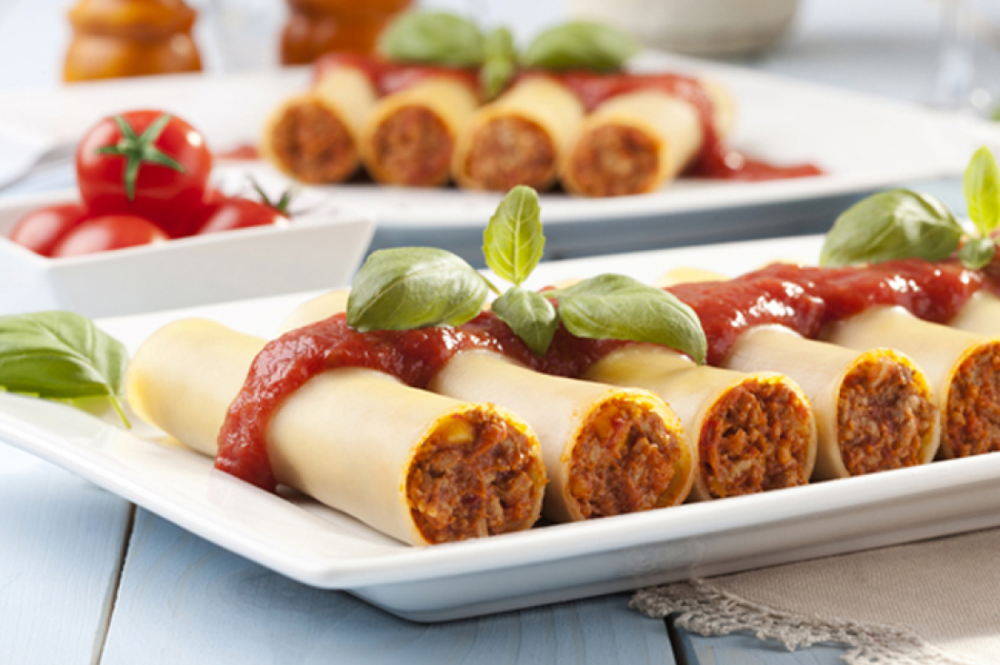

Cannelloni
Ingredients
- 2 cups of flour.
- 2 eggs.
- 2 cups of milk.
- pinch of salt
- Sugar sprinkle.
- tablespoon vinegar.
- Mozzarella cheese.
- Cheddar cheese.
- Masajeh Chicken.
- 2 tablespoons of sauce.
Recipe
- Put the milk and flour together and mix well.
- Salt, sugar, eggs and vinegar are put in to treat the smell of eggs.
- The ingredients are mixed together well and the consistency becomes liquid.
- Leave the mixture for half an hour to rest.
- Bring the mixture and bring a non-stick pan.
- Part of the mixture is poured to form circles of cannelloni the size of a bowl.
- It is placed on a medium heat.
- The cannelloni, after it has color on both sides, is taken out on a wide plate and covered with a clean towel.
- The whole amount of cannelloni is done and each time it is covered so that it does not dry out.
- The cheese is mixed with the chickpeas.
- The cannelloni chips are stuffed with chicken and cheese filling.
- The cannelloni is rolled up and closed from the edges.
- A layer is placed at the bottom of the tray of bechamel.
- Stack chicken cannelloni in Chinese.
- Spread the cannelloni with the sauce.
- A layer of bechamel is placed on the surface.
- Cheddar and mozzarella cheese are placed on the surface.
- Enter the oven on the middle rack on a medium heat until the face turns red.
- They are taken out, cut and put into dishes.